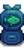

Targeted Bait
| Targeted Bait | |
| Increases your chance to catch [fish name]. | |
| Information | |
| Source | Bait Maker • Fish Shop |
| Energy | Inedible |
| Sell Price | 0.1 × Fish Price |
| Crafting | |
| Equipment |  Bait Maker |
| Processing Time | |
| Ingredients | Any fish (1) |
| Produces | 5-10 Targeted Bait |
Targeted Bait is a specialized type of bait which increases the chance of hooking a specific fish in a given area provided the fish can be caught in that area at that time, weather, and season. The bite rate for any targeted bait is the same as for standard bait (reduces the delay before a nibble by 50%).[1]
It can be obtained from a Bait Maker after putting in any fish, which will result in 5-10 "[Fish Name] Bait." It will be finished crafting when the clock ticks over to the next 10-minute interval. The player can also purchase 8-12 targeted bait of a specific fish per day from the Fish Shop for double the sell price (0.2 x Fish price).
Using targeted bait made from a Legendary Fish the player has already caught does not allow them to catch another one.
Targeted Bait cannot be used with the Training Rod or the Bamboo Pole. Only the Fiberglass Rod, the Iridium Rod, and the Advanced Iridium Rod can use bait.
Effects
When using targeted bait, the Locational Chance[2] and Spawn Rate for the targeted fish are both multiplied by 1.66, after applying any relevant modifiers.[3] These chances are capped at 1, so in most cases the Locational Chance adjustment will have no effect as most fish have a Locational Chance of 1. However, the Spawn Rate normally has a cap of 0.9, so this adjustment can guarantee a fish passing that check, assuming that a different item is not hooked first. In addition, when choosing from the list of possible catches for the area, the game will look at the first three items to pass both the Spawn Rate and Location-based checks. If the targeted fish is among them, the player will hook the targeted fish. Otherwise, the player will hook the third item, whatever it may be. If the game reaches the end of the list of possible catches before three items have passed both checks, it will loop back to the beginning of the list and check each item a second time.[4] If it reaches the end of the list a second time, the player will hook trash.[5]
Notes
- Some fish, such as the Legendary Fish, Extended Family, and Submarine fish ignore Spawn Rate completely giving them an effective 100% Spawn Rate, regardless of the 1.66x multiplier. However, they still benefit from all other effects, including the Locational Chance multiplier and extra hook attempts.
- The Legendary Fish and Extended Family have earlier Precedence[6] than all other items in their locations, and so are always attempted on the first loop, regardless of Targeted Bait. This significantly reduces the impact of the extra hook attempts, as the second attempt only occurs under the highly unlikely circumstance that less than 3 items pass their random checks on the first loop (including Trash, which is guaranteed to pass). Thus, the chance of hooking a specific Legendary Fish or Legendary Fish II is multiplied by at least 1.66 with Targeted Bait.
- Mines fish, other than Ghostfish, do not make use of the standard fishing algorithm at all, and so are unaffected by the usual effects of Targeted Bait. Instead, Targeted Bait provides a flat bonus to their hook chance. This is 10% for Stonefish, 9% for Ice Pip, and 8% for Lava Eel.[7]
- Goby is also unaffected by the usual effects of Targeted Bait. Instead, Targeted Bait provides a flat 20% increase to its Locational Chance. It also ignores Spawn Rate completely like with Legendary Fish. However, Goby still benefits from the extra hook attempts. This results in Goby Bait increasing the chance of hooking a Goby by at least 20%.[8]
- As a consequence of the Targeted Bait mechanics, if the player uses targeted bait for a fish that cannot be caught in the area at the given time, weather, and season, the chances of hooking trash increase significantly.
In Crab Pots
Targeted Bait also works with Crab Pots, provided the player does not have the Mariner profession. Its effect depends on the base chance of the targeted fish, which is the chance to hook the fish provided all of the fish listed earlier in Data\Fish.xnb wasn't selected first. Specifically:[9]
- Lobster chance is quadrupled.
- Clam, Crab, and Oyster chances are tripled.
- All other Crab Pot fish chances are doubled.
Targeted Bait has no effect if the player has the Mariner profession.[9]
Below is the table detailing the chances for obtaining items with Crab Pot Targeted Bait (in saltwater) without the Mariner profession:
| Image | Name | % Lobster Bait | % Crab Bait | % Oyster Bait | % Clam Bait | % Shrimp Bait | % Cockle Bait | % Mussel Bait |
|---|---|---|---|---|---|---|---|---|
| Lobster | 18.0% | 4.5% | 4.5% | 4.5% | 4.5% | 4.5% | 4.5% | |
| Crab | 7.2% | 25.7% | 8.6% | 8.6% | 8.6% | 8.6% | 8.6% | |
| Oyster | 9.7% | 9.0% | 34.6% | 11.5% | 11.5% | 11.5% | 11.5% | |
| Clam | 8.3% | 7.6% | 6.3% | 29.4% | 9.8% | 9.8% | 9.8% | |
| Shrimp | 9.4% | 8.6% | 7.2% | 7.2% | 22.2% | 11.1% | 11.1% | |
| Cockle | 11.2% | 10.4% | 8.6% | 8.6% | 10.0% | 26.7% | 13.3% | |
| Mussel | 9.2% | 8.5% | 7.1% | 7.1% | 8.2% | 6.2% | 21.8% | |
| Trash | 27.0% | 25.7% | 23.1% | 23.1% | 25.2% | 21.6% | 19.3% |
Below is the table detailing the chances for obtaining items with Crab Pot Targeted Bait (in freshwater) without the Mariner profession:
| Image | Name | % Snail Bait | % Crayfish Bait | % Periwinkle Bait |
|---|---|---|---|---|
| Snail | 45.0% | 22.5% | 22.5% | |
| Crayfish | 15.8% | 47.3% | 23.6% | |
| Periwinkle | 16.1% | 11.1% | 43.9% | |
| Trash | 23.2% | 19.1% | 10.0% |
Fish Shop Stock
Each day, Willy sells a limited quantity (8-12) of one Targeted Bait (e.g. Catfish Bait, Sardine Bait) for double the bait's sell price. The type of bait Willy sells depends on the season. Below is the list of all targeted bait Willy can sell in each season.
| Season | Possible Targeted Bait Sold |
|---|---|
| Anchovy Bait, Sardine Bait, Bream Bait, Largemouth Bass Bait, Smallmouth Bass Bait, Catfish Bait, Eel Bait, Flounder Bait, Stonefish Bait | |
| Pufferfish Bait, Tuna Bait, Sardine Bait, Bream Bait, Largemouth Bass Bait, Rainbow Trout Bait, Pike Bait, Red Mullet Bait, Octopus Bait, Super Cucumber Bait, Flounder Bait, Sturgeon Bait, Dorado Bait, Tilapia Bait, Ice Pip Bait | |
| Anchovy Bait, Sardine Bait, Bream Bait, Largemouth Bass Bait, Smallmouth Bass Bait, Salmon Bait, Octopus Bait, Catfish Bait, Eel Bait, Midnight Carp Bait, Tilapia Bait, Albacore Bait, Lava Eel Bait | |
| Tuna Bait, Sardine Bait, Bream Bait, Largemouth Bass Bait, Walleye Bait, Perch Bait, Catfish Bait, Pike Bait, Red Mullet Bait, Squid Bait, Super Cucumber Bait, Midnight Carp Bait, Sturgeon Bait, Albacore Bait, Lingcod Bait, Stonefish Bait, Ice Pip Bait, Lava Eel Bait |
Use
Requires: Fiberglass Rod,  Iridium Rod, or
Iridium Rod, or  Advanced Iridium Rod.
Advanced Iridium Rod.
Each cast uses one piece of bait or one magnet. When all bait is used up, the game pops up a notification saying "You've used your last piece of bait."
To attach bait to a fishing rod, open the inventory, click on the bait ( left-click or
left-click or  right-click, depending on how many bait will be used), and then
right-click, depending on how many bait will be used), and then  on the rod. To remove bait,
on the rod. To remove bait,  on the rod.
on the rod.
On an Xbox controller, press  on the bait to select the whole stack (or
on the bait to select the whole stack (or  to pick up a single one), then
to pick up a single one), then  to attach to the rod.
to attach to the rod.
On a PS4 controller, press  on the bait to select the whole stack (or
on the bait to select the whole stack (or  to pick up a single one), then
to pick up a single one), then  to attach to the rod.
to attach to the rod.
On a Nintendo Switch Controller, Press  on the bait to select the whole stack (Or
on the bait to select the whole stack (Or  to pick up a single one), then
to pick up a single one), then  to attach to the rod.
to attach to the rod.
Bait can be detached by pressing  on either Controller. (
on either Controller. ( on Nintendo Switch)
on Nintendo Switch)
For the mobile version, bait can be added to the fishing rod by opening the inventory, then dragging the bait and dropping it on top of the rod. Bait cannot be removed on mobile.
Bundles
Targeted Bait is not used in any bundles.
Gifting
| Villager Reactions
| |
|---|---|
| Hate | |
Quests
Targeted Bait is not used in any quests.
References
- ↑ See FishingRod::calculateTimeUntilFishingBite in the game code.
- ↑ See SpawnFishData::GetChance in the game code. The multiplier is applied after all modifiers except Luck, most notably applying after any Curiosity Lure buff, by far the most common modifier to Location chance.
- ↑ See GameLocation::GetGenericFishRequirements in the game code. The 1.66x multiplier is applied after fishing zone, fishing level, and curiosity lure modifiers, and the 0.9 cap.
- ↑ See GameLocation::GetFishFromLocationData in the game code. If a fish passes both random checks, it is hooked if either: there no targeted fish, it is the targeted fish, or at least two items in the list have already passed both checks.
- ↑ Since Trash exists at precedence 2000 in all areas, and is guaranteed to pass both checks, the only way to reach the end of the list twice is if Trash was the only item hooked on both loops. Therefore, the only items that can be hooked from this condition are Trash items.
- ↑ See Data\Locations.xnb in the game files for Precedence values.
- ↑ See MineShaft::GetFish in the game code.
- ↑ See Data\Locations.xnb in the game files.
- ↑ 9.0 9.1 See CrabPot::DayUpdate in the game code.
History
- 1.6: Introduced.
- 1.6.3: Fixed bug where other types of bait could act as targeted bait for no fish, which resulted in excess trash fished.